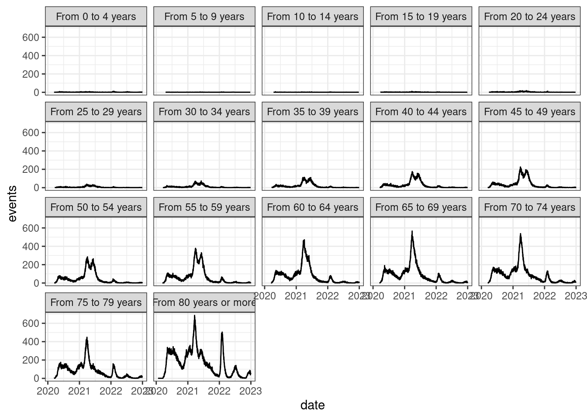

library(tidyverse)On this post, we will compute crude and age-adjusted COVID-19 mortality rates for Brazilian municipalities, from 2020 to 2022 per epidemiological weeks.
We will use the {tidyverse} and other packages that I will call later.
COVID-19 mortality data
The Brazilian official source of mortality data is a health information system called “Sistema de Informações de Mortalidade – SIM”. This system receives mortality data from the municipalities and states and consolidates it.
The SIM dataset is published yearly, with a year lag. This time is needed to consolidate all the data and perform checks. The SIM datasets of 2019, 2020, and 2021 are officially published and the 2022 dataset is published as “preliminary”, which means that modifications and updates are possible.
The datasets are publicly available on the OpenDataSUS website as CSV files. I downloaded the datasets from 2019 to 2023, as the 2023 may have some death records that occurred in 2022.
The code chunk below has the CSV column types specification to read these files with the {readr} package. The chunk is folded to save screen space ;-)
Code
date_format <- "%d%m%Y"
cols_spec <- cols(
ORIGEM = col_double(),
TIPOBITO = col_double(),
DTOBITO = col_date(format = date_format),
HORAOBITO = col_character(),
NATURAL = col_character(),
CODMUNNATU = col_double(),
DTNASC = col_date(format = date_format),
IDADE = col_double(),
SEXO = col_double(),
RACACOR = col_double(),
ESTCIV = col_double(),
ESC = col_double(),
ESC2010 = col_double(),
SERIESCFAL = col_double(),
OCUP = col_character(),
CODMUNRES = col_double(),
LOCOCOR = col_double(),
CODESTAB = col_character(),
ESTABDESCR = col_character(),
CODMUNOCOR = col_double(),
IDADEMAE = col_double(),
ESCMAE = col_double(),
ESCMAE2010 = col_double(),
SERIESCMAE = col_double(),
OCUPMAE = col_double(),
QTDFILVIVO = col_character(),
QTDFILMORT = col_character(),
GRAVIDEZ = col_double(),
SEMAGESTAC = col_double(),
GESTACAO = col_double(),
PARTO = col_double(),
OBITOPARTO = col_double(),
PESO = col_character(),
TPMORTEOCO = col_double(),
OBITOGRAV = col_double(),
OBITOPUERP = col_double(),
ASSISTMED = col_double(),
EXAME = col_character(),
CIRURGIA = col_character(),
NECROPSIA = col_double(),
LINHAA = col_character(),
LINHAB = col_character(),
LINHAC = col_character(),
LINHAD = col_character(),
LINHAII = col_character(),
CAUSABAS = col_character(),
CB_PRE = col_character(),
COMUNSVOIM = col_character(),
DTATESTADO = col_date(format = date_format),
CIRCOBITO = col_double(),
ACIDTRAB = col_double(),
FONTE = col_double(),
NUMEROLOTE = col_double(),
TPPOS = col_character(),
DTINVESTIG = col_date(format = date_format),
CAUSABAS_O = col_character(),
DTCADASTRO = col_date(format = date_format),
ATESTANTE = col_double(),
STCODIFICA = col_character(),
CODIFICADO = col_character(),
VERSAOSIST = col_number(),
VERSAOSCB = col_number(),
FONTEINV = col_double(),
DTRECEBIM = col_date(format = date_format),
ATESTADO = col_character(),
DTRECORIGA = col_date(format = date_format),
CAUSAMAT = col_character(),
ESCMAEAGR1 = col_character(),
ESCFALAGR1 = col_character(),
STDOEPIDEM = col_double(),
STDONOVA = col_double(),
DIFDATA = col_character(),
NUDIASOBCO = col_double(),
NUDIASOBIN = col_character(),
DTCADINV = col_date(format = date_format),
TPOBITOCOR = col_double(),
DTCONINV = col_date(format = date_format),
FONTES = col_character(),
TPRESGINFO = col_double(),
TPNIVELINV = col_character(),
NUDIASINF = col_character(),
DTCADINF = col_date(format = date_format),
MORTEPARTO = col_double(),
DTCONCASO = col_date(format = date_format),
FONTESINF = col_character(),
ALTCAUSA = col_double(),
CONTADOR = col_double()
)The code chunk bellow reads the CSV file with the column types specification from above.
sim19 <- readr::read_csv2(file = "../../covidbr/Mortalidade_Geral_2019.csv", col_types = cols_spec)
sim20 <- readr::read_csv2(file = "../../covidbr/Mortalidade_Geral_2020.csv", col_types = cols_spec)
sim21 <- readr::read_csv2(file = "../../covidbr/Mortalidade_Geral_2021.csv", col_types = cols_spec)
sim22 <- readr::read_csv2(file = "../../covidbr/DO22OPEN.csv", col_types = cols_spec)
sim23 <- readr::read_csv2(file = "../../covidbr/DO23OPEN.csv", col_types = cols_spec)After reading the files, let’s create one single data frame with the variables we will use.
1covid <- bind_rows(sim19, sim20, sim21, sim22, sim23) %>%
2 filter(CAUSABAS == "B342") %>%
3 filter(DTOBITO >= as.Date("2020-01-01") & DTOBITO <= as.Date("2022-12-31")) %>%
4 select(DTOBITO, DTNASC, CODMUNRES) %>%
5 na.omit()
6rm(sim19, sim20, sim21, sim22, sim23, cols_spec, date_format)- 1
-
Bind the
simobjects into a single data frame. - 2
- Filter the records where the basic cause of death is COVID-19 (ICD-10 code B342).
- 3
- Filter the records keeping only the deaths that occurred between 2019 and 2022.
- 4
-
Select the date of death (
DTOBITO) and date of birth (DTNASC) to compute the age and the municipality code of residence (CODMUNRES). - 5
- Omit rows with missing data.
- 6
-
Remove the
sim*objects as we will no longer need them.
Our dataset has 702284 records.
head(covid, 10)# A tibble: 10 × 3
DTOBITO DTNASC CODMUNRES
<date> <date> <dbl>
1 2020-05-21 1942-08-10 120010
2 2020-05-27 1943-02-19 120010
3 2020-05-27 1975-01-14 120025
4 2020-05-05 1972-06-10 120040
5 2020-05-25 1939-10-04 120040
6 2020-05-25 1965-02-14 120040
7 2020-05-25 1946-06-17 120040
8 2020-05-30 1937-05-17 120080
9 2020-05-30 1959-06-08 120013
10 2020-05-13 1982-08-22 120040Age groups
Now we need to label the records into age groups.
covid <- covid %>%
mutate(
1 age = year(as.period(interval(start = DTNASC, end = DTOBITO))),
2 age_group = case_when(
age <= 4 ~ "From 0 to 4 years",
age >= 5 & age <= 9 ~ "From 5 to 9 years",
age >= 10 & age <= 14 ~ "From 10 to 14 years",
age >= 15 & age <= 19 ~ "From 15 to 19 years",
age >= 20 & age <= 24 ~ "From 20 to 24 years",
age >= 25 & age <= 29 ~ "From 25 to 29 years",
age >= 30 & age <= 34 ~ "From 30 to 34 years",
age >= 35 & age <= 39 ~ "From 35 to 39 years",
age >= 40 & age <= 44 ~ "From 40 to 44 years",
age >= 45 & age <= 49 ~ "From 45 to 49 years",
age >= 50 & age <= 54 ~ "From 50 to 54 years",
age >= 55 & age <= 59 ~ "From 55 to 59 years",
age >= 60 & age <= 64 ~ "From 60 to 64 years",
age >= 65 & age <= 69 ~ "From 65 to 69 years",
age >= 70 & age <= 74 ~ "From 70 to 74 years",
age >= 75 & age <= 79 ~ "From 75 to 79 years",
age >= 80 ~ "From 80 years or more"
),
3 age_group = fct_relevel(
age_group,
"From 0 to 4 years", "From 5 to 9 years",
"From 10 to 14 years", "From 15 to 19 years",
"From 20 to 24 years", "From 25 to 29 years",
"From 30 to 34 years", "From 35 to 39 years",
"From 40 to 44 years", "From 45 to 49 years",
"From 50 to 54 years", "From 55 to 59 years",
"From 60 to 64 years", "From 65 to 69 years",
"From 70 to 74 years", "From 75 to 79 years",
"From 80 years or more"
)
) %>%
4 select(date = DTOBITO, code_muni = CODMUNRES, age_group)- 1
-
Compute the age based on the date of birth and date of death. For this, I used some functions from the
{lubridate}package. - 2
- Label the age groups.
- 3
-
Convert
age_groupto an ordered factor variable. - 4
- Select and rename the desired variables.
head(covid, 10)# A tibble: 10 × 3
date code_muni age_group
<date> <dbl> <fct>
1 2020-05-21 120010 From 75 to 79 years
2 2020-05-27 120010 From 75 to 79 years
3 2020-05-27 120025 From 45 to 49 years
4 2020-05-05 120040 From 45 to 49 years
5 2020-05-25 120040 From 80 years or more
6 2020-05-25 120040 From 55 to 59 years
7 2020-05-25 120040 From 70 to 74 years
8 2020-05-30 120080 From 80 years or more
9 2020-05-30 120013 From 60 to 64 years
10 2020-05-13 120040 From 35 to 39 years Let’s take a look at the epidemiological curves per date and age group.
covid %>%
group_by(date, age_group) %>%
summarise(events = n()) %>%
ungroup() %>%
ggplot(aes(x = date, y = events)) +
geom_line() +
facet_wrap(~age_group) +
theme_bw()
It is pretty clear that COVID-19 mortality incidence is related to age. Thus, to compare mortality rates of different regions, we need to compute age-adjusted rates.
Aggregate data
Let’s aggregate our dataset by municipality of residence, epidemiological and epidemiological week.
covid_agg <- covid %>%
1 group_by(code_muni, date, age_group) %>%
summarise(events = n()) %>%
ungroup() %>%
2 group_by(code_muni) %>%
complete(
date = seq.Date(as.Date("2020-01-01"), as.Date("2022-12-31"), by = "day"),
age_group = unique(covid$age_group),
fill = list(events = 0)
) %>%
ungroup() %>%
3 mutate(
year = epiyear(date),
week = epiweek(date)
) %>%
4 group_by(code_muni, year, week, age_group) %>%
summarise(events = sum(events)) %>%
ungroup()- 1
- First, we aggregate the COVID-19 per municipality of residence, age group and date. But this aggregation have some gaps on date and age groups, as there are no deaths at some specific dates and age groups.
- 2
-
We can complete these gaps using the
tidyr::complete, supplying the dates interval and age groups. We will fill theeventsvariables with zero values. - 3
- With the complete dataset, we compute the epidemiological year and week.
- 4
- And aggregate by municipality code, year, week and age_group.
Population data
We need to add the population data to compute the rates. Let’s prepare our population data using the brpop package.
mun_pop <- brpop::mun_pop() %>%
filter(year %in% 2020:2022) %>%
rename(population = pop) %>%
filter(age_group != "Total") %>%
rename(code_muni = mun)As there is no population estimates for 2022 yet, we will repeat the population from 2021.
mun_pop_2022 <- mun_pop %>%
filter(year == 2021) %>%
mutate(year = 2022)
mun_pop <- bind_rows(mun_pop, mun_pop_2022)
rm(mun_pop_2022)Let’s join this population data with the COVID-19 data.
covid_agg <- right_join(covid_agg, mun_pop, by = c("code_muni", "year", "age_group")) %>%
pivot_longer(cols = c("events", "population"))
head(covid_agg, 10)# A tibble: 10 × 6
code_muni year week age_group name value
<dbl> <dbl> <dbl> <chr> <chr> <int>
1 110000 2020 1 From 0 to 4 years events 0
2 110000 2020 1 From 0 to 4 years population 0
3 110000 2020 1 From 5 to 9 years events 0
4 110000 2020 1 From 5 to 9 years population 0
5 110000 2020 1 From 10 to 14 years events 0
6 110000 2020 1 From 10 to 14 years population 0
7 110000 2020 1 From 15 to 19 years events 0
8 110000 2020 1 From 15 to 19 years population 0
9 110000 2020 1 From 20 to 24 years events 0
10 110000 2020 1 From 20 to 24 years population 0Reference population
We will use as reference population, the year of 2020.
pop_ref <- mun_pop %>%
filter(year == 2020) %>%
group_by(age_group) %>%
summarise(population = sum(population)) %>%
ungroup()
print(pop_ref)# A tibble: 17 × 2
age_group population
<chr> <int>
1 From 0 to 4 years 14730300
2 From 10 to 14 years 14805480
3 From 15 to 19 years 15790890
4 From 20 to 24 years 17233273
5 From 25 to 29 years 16985859
6 From 30 to 34 years 17205414
7 From 35 to 39 years 17026565
8 From 40 to 44 years 15602995
9 From 45 to 49 years 13652508
10 From 5 to 9 years 14650284
11 From 50 to 54 years 12617802
12 From 55 to 59 years 11257270
13 From 60 to 64 years 9383724
14 From 65 to 69 years 7349241
15 From 70 to 74 years 5408657
16 From 75 to 79 years 3614384
17 From 80 years or more 4441046Crude and adjusted rates
To compute the crude and age-adjusted rates, we will use the {tidyrates} package.
rates <- tidyrates::rate_adj_direct(
.data = covid_agg,
.std = pop_ref,
.keys = c("code_muni", "year", "week"),
.progress = FALSE
) %>%
mutate(
crude.rate = crude.rate * 100000,
adj.rate = adj.rate * 100000,
lci = lci * 100000,
uci = uci * 100000,
)That’s it! Let’s take a look at the rates for Rio de Janeiro, RJ on 2022.
rates %>%
filter(code_muni == 330455) %>%
filter(year == 2022)# A tibble: 52 × 7
code_muni year week crude.rate adj.rate lci uci
<dbl> <dbl> <dbl> <dbl> <dbl> <dbl> <dbl>
1 330455 2022 1 0.251 0.175 0.101 0.297
2 330455 2022 2 1.17 0.839 0.662 1.06
3 330455 2022 3 3.81 2.70 2.37 3.06
4 330455 2022 4 5.58 3.96 3.57 4.40
5 330455 2022 5 4.44 3.11 2.76 3.49
6 330455 2022 6 2.83 2.00 1.72 2.32
7 330455 2022 7 1.98 1.43 1.20 1.71
8 330455 2022 8 0.989 0.682 0.528 0.880
9 330455 2022 9 0.398 0.283 0.185 0.428
10 330455 2022 10 0.310 0.217 0.133 0.346
# ℹ 42 more rowsLet’s save the rates data frame as a parquet and CSV file.
arrow::write_parquet(x = rates, sink = "../../covidbr/covid19_adj_rates.parquet")
write_csv2(x = rates, file = "../../covidbr/covid19_adj_rates.csv")These files are available for download at Zenodo: 
Mortality rates graph for capitals
The graph bellow present the crude and adjusted rates at the Brazilian capitals.
capitals <- geobr::read_capitals(as_sf = TRUE, showProgress = FALSE) %>%
mutate(
code_muni = ifelse(code_muni == 2803203, 2800308, code_muni),
name_muni = ifelse(code_muni == 2800308, "Aracaju", name_muni)
) %>%
mutate(code_muni = as.numeric(substr(code_muni, 0, 6))) %>%
select(-year) %>%
sf::st_drop_geometry()
rates_for_plot <- rates %>%
right_join(capitals, by = "code_muni") %>%
mutate(week = paste0(year, "-", str_pad(week, 2, pad = "0"))) %>%
select(week, name_muni, crude.rate, adj.rate) %>%
pivot_longer(cols = c("crude.rate", "adj.rate"))
ggplot() +
geom_line(data = rates_for_plot, aes(x = week, y = value, group = name, color = name)) +
facet_wrap(~name_muni) +
theme_bw() +
theme(
legend.position = "bottom",
legend.direction = "horizontal",
axis.text.x=element_blank(),
axis.ticks.x=element_blank()
) +
labs(
title = "Age standardized COVID-19 mortality rates for Brazilian capitals",
x = "Epi Week",
y = "Rate per 100,000 inhab.",
color = NULL
)
Session info
sessionInfo()R version 4.3.2 (2023-10-31)
Platform: x86_64-pc-linux-gnu (64-bit)
Running under: Ubuntu 22.04.3 LTS
Matrix products: default
BLAS: /usr/lib/x86_64-linux-gnu/blas/libblas.so.3.10.0
LAPACK: /usr/lib/x86_64-linux-gnu/lapack/liblapack.so.3.10.0
locale:
[1] LC_CTYPE=en_US.UTF-8 LC_NUMERIC=C
[3] LC_TIME=en_CA.UTF-8 LC_COLLATE=en_US.UTF-8
[5] LC_MONETARY=en_CA.UTF-8 LC_MESSAGES=en_US.UTF-8
[7] LC_PAPER=en_CA.UTF-8 LC_NAME=C
[9] LC_ADDRESS=C LC_TELEPHONE=C
[11] LC_MEASUREMENT=en_CA.UTF-8 LC_IDENTIFICATION=C
time zone: Europe/Paris
tzcode source: system (glibc)
attached base packages:
[1] stats graphics grDevices utils datasets methods base
other attached packages:
[1] lubridate_1.9.3 forcats_1.0.0 stringr_1.5.0 dplyr_1.1.3
[5] purrr_1.0.2 readr_2.1.4 tidyr_1.3.0 tibble_3.2.1
[9] ggplot2_3.4.4 tidyverse_2.0.0
loaded via a namespace (and not attached):
[1] gtable_0.3.4 xfun_0.41 htmlwidgets_1.6.2
[4] brpop_0.3.0 processx_3.8.2 RApiSerialize_0.1.2
[7] callr_3.7.3 tzdb_0.4.0 vctrs_0.6.4
[10] tools_4.3.2 ps_1.7.5 generics_0.1.3
[13] curl_5.1.0 parallel_4.3.2 proxy_0.4-27
[16] fansi_1.0.5 pkgconfig_2.0.3 KernSmooth_2.23-22
[19] data.table_1.14.8 checkmate_2.3.0 assertthat_0.2.1
[22] RcppParallel_5.1.7 lifecycle_1.0.3 compiler_4.3.2
[25] farver_2.1.1 multidplyr_0.1.3 munsell_0.5.0
[28] qs_0.25.5 codetools_0.2-19 class_7.3-22
[31] htmltools_0.5.7 yaml_2.3.7 pillar_1.9.0
[34] crayon_1.5.2 epitools_0.5-10.1 classInt_0.4-10
[37] parallelly_1.36.0 tidyselect_1.2.0 digest_0.6.33
[40] stringi_1.7.12 future_1.33.0 sf_1.0-14
[43] listenv_0.9.0 labeling_0.4.3 arrow_13.0.0.1
[46] fastmap_1.1.1 grid_4.3.2 colorspace_2.1-0
[49] cli_3.6.1 magrittr_2.0.3 utf8_1.2.4
[52] e1071_1.7-13 withr_2.5.2 scales_1.2.1
[55] backports_1.4.1 bit64_4.0.5 timechange_0.2.0
[58] httr_1.4.7 rmarkdown_2.25 globals_0.16.2
[61] tidyrates_0.0.1 bit_4.0.5 hms_1.1.3
[64] stringfish_0.15.8 evaluate_0.23 knitr_1.45
[67] rlang_1.1.2 Rcpp_1.0.11 DBI_1.1.3
[70] glue_1.6.2 geobr_1.8.1 rstudioapi_0.15.0
[73] vroom_1.6.4 jsonlite_1.8.7 R6_2.5.1
[76] units_0.8-4